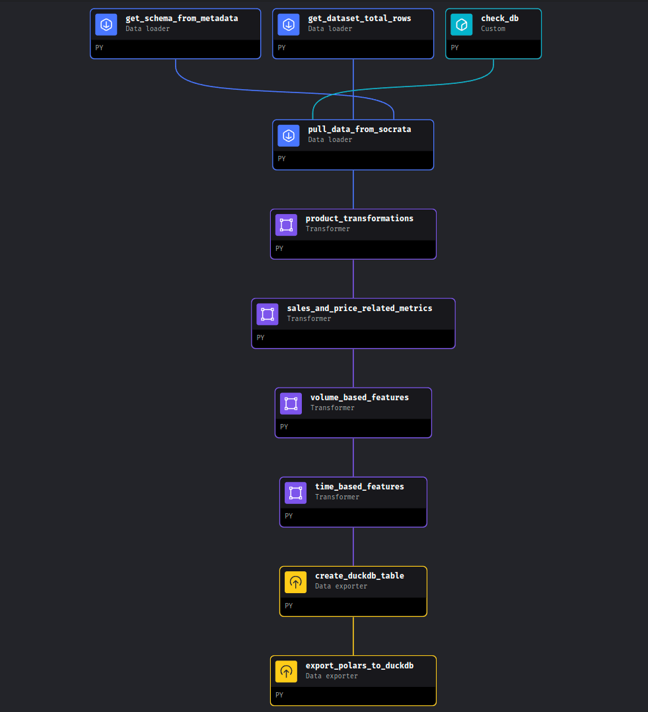

headers = {"X-App-Token": "YOUR_TOKEN"}
response = requests.get(data_url, headers=headers)Data Pipeline with Mage, DuckDB, and Great Expectations

Token
Bash execution
user@user-pc:~/mage_duckdb_pipeline$ mage run . socrata_iowa_liquor_pipeline
Fetching the records-per-year metadata. This might take a couple minutes..
Done! We have our year record metadata.
SODA data pull started.
Years to be fetched: 2017, 2018, 2019, 2020, 2021.
Fetching data: 100%|█████████████████████████████████████| 5/5 [10:08<00:00, 121.69s/it]
Product-related new variables, generated.
Sales and price related metrics, computed.
Volume-based features, computed.
Time-based features, computed.
Data loaded to your DuckDB database!
Pipeline run completed.conn2 <- DBI::dbConnect(
drv = duckdb::duckdb(),
dbdir = "../data/iowa_liquor.duckdb",
read_only = TRUE
)SELECT *
FROM iowa_liquor_sales
LIMIT 10tibble::tibble(query2)# A tibble: 10 × 36
invoice_line_no date store name address city zipcode
<chr> <dttm> <chr> <chr> <chr> <chr> <chr>
1 S10440300006 2013-02-05 00:00:00 2655 HY-VEE FOOD … 1200 S… CLAR… 51632
2 S16464700176 2013-12-23 00:00:00 2638 HY-VEE WINE … 5925 U… CEDA… 50613
3 S12001000067 2013-05-02 00:00:00 2561 HY-VEE FOOD … 4605 F… DES … 50321
4 S12643000007 2013-06-06 00:00:00 3973 MMDG SPIRITS… 126A W… AMES 50014
5 S14029600009 2013-08-21 00:00:00 3776 WAL-MART 511… 3101 W… DAVE… 52806
6 S15244000066 2013-10-21 00:00:00 2190 CENTRAL CITY… 1460 2… DES … 50314
7 S10238500019 2013-01-24 00:00:00 4023 WAL-MART 138… 1515 S… BOONE 50036
8 S13319200017 2013-07-11 00:00:00 4426 LIQUOR AND G… 114 CE… MARS… 50158
9 S14901500074 2013-10-02 00:00:00 4129 CYCLONE LIQU… 626 LI… AMES 50010
10 S15397800035 2013-10-29 00:00:00 2565 HY-VEE FOOD … 819 N … SPEN… 51301
# ℹ 29 more variables: store_location <chr>, county_number <chr>, county <chr>,
# category <chr>, category_name <chr>, vendor_no <chr>, vendor_name <chr>,
# itemno <chr>, im_desc <chr>, pack <dbl>, bottle_volume_ml <dbl>,
# state_bottle_cost <dbl>, state_bottle_retail <dbl>, sale_bottles <dbl>,
# sale_dollars <dbl>, sale_liters <dbl>, sale_gallons <dbl>,
# liquor_type <chr>, is_premium <lgl>, bottle_size <chr>,
# gov_profit_margin <dbl>, gov_retail_markup_percentage <dbl>, …import duckdb
con_py = duckdb.connect("../data/iowa_liquor.duckdb", read_only=True)
polars_df = con_py.sql("SELECT liquor_type, bottle_size, price_per_liter FROM iowa_liquor_sales LIMIT 10").pl()
polars_df
shape: (10, 3)
| liquor_type | bottle_size | price_per_liter |
|---|---|---|
| str | str | f32 |
| "Whisky" | "large" | 16.651428 |
| "Whisky" | "medium" | 29.92 |
| "Cream" | "medium" | 25.0 |
| "Rum" | "large" | 10.91 |
| "Whisky" | "medium" | 42.0 |
| "Whisky" | "large" | 11.994286 |
| "Rum" | "large" | 6.497143 |
| "Whisky" | "medium" | 25.879999 |
| "Gin" | "medium" | 10.013333 |
| "Vodka" | "medium" | 26.24 |
polars_df.height10